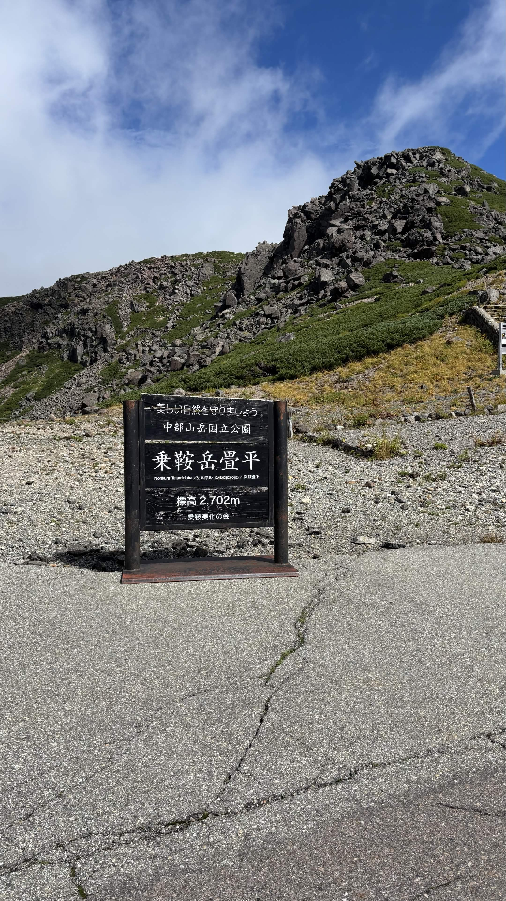
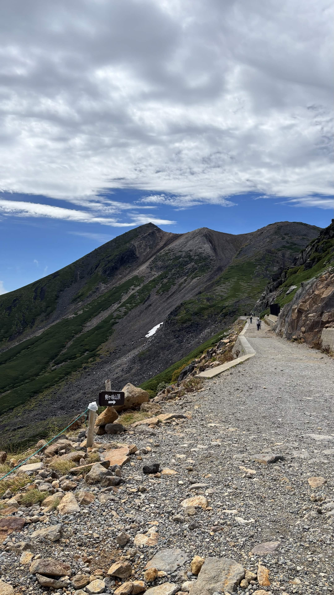
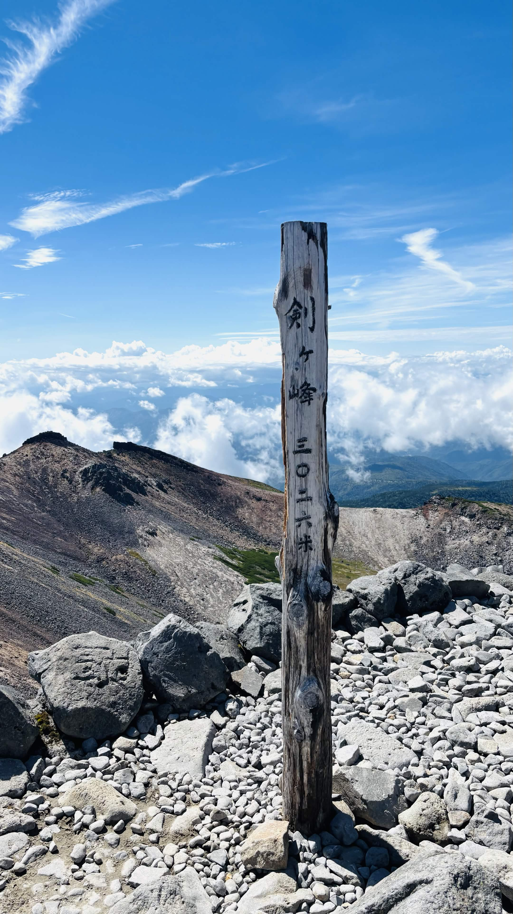

北アルプス
【北アルプス】標高3,026mの絶景ロード、秋の乗鞍岳日帰り畳平登山
山行日: 2025.09.15

スタート地点の畳平。標高2,700mを超える天空の世界
山行データ＆評価
| 日程 |
2025年9月15日（登頂） |
| メンバー |
ソロ（なし） |
| 難易度（俺流10段階） |
技術力 1 / 体力度 2 |
| アクセス（片道目安） |
乗鞍畳平 → 剣ヶ峰：約1時間45分 |
装備＆ギア
- ザック： 35Lザック
- 水・食料： 水2L、行動食それなりに
- その他： 日帰り基本装備など

歩きやすい登山道を登り、最高峰・剣ヶ峰を目指す
山行記録＆ポイントまとめ
事情があり急遽向かうことになった乗鞍岳。秋晴れの中で3,000m超えの空気を楽しんできました。
- 快適なハイク： 畳平からのアプローチは非常に良好で、体力的にも技術的にも楽々と登ることができるルートです。
- 山頂の混雑： 手軽に登れる大人気ピークということもあり、剣ヶ峰の山頂標識前には長蛇の列ができていました。記念撮影の待ち時間はかなり長めです。

山頂標識前は大賑わい！待ち時間を経て辿り着いた絶景
振り返りと次回への目標
短時間で3,000m級の大パノラマを味わえる乗鞍岳の魅力を再確認できた一日でした。山頂での待ち時間はありましたが、好天のもとで素晴らしい景色を堪能できました。
今回の山行を通して、さらに北アルプスの深い魅力に触れたいという想いが強まりました。次回はより奥深い北アルプスの山々に挑戦していきたいと思います！
← HOMEへ戻る